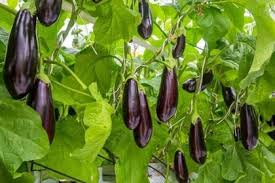

Info Tanaman Banyumanik

Terong
Kingdom: Plantae
Divisi: Tracheophyta
Class: Magnoliopsida
Ordo: Solanales
Famili: Solanaceae
Genus: Solanum
Spesies: Solanum melongena
🌱 Budidaya
- Lingkungan: Tumbuh baik di dataran rendah hingga 1.200 mdpl. Membutuhkan tanah yang gembur dan subur dengan pH antara 5,5–7. Idealnya mendapat sinar matahari penuh dan suhu antara 22–30°C.
- Penanaman: Gunakan jarak tanam 60 x 70 cm. Dapat ditanam langsung di lahan terbuka atau dalam polybag besar.
- Perawatan: Lakukan penyiraman secara rutin, terutama saat musim kering. Beri pupuk saat awal tanam dan ketika berbunga (kompos + NPK). Lakukan penyiangan gulma dan pengendalian hama seperti ulat dan kutu daun.
💡 Fun Fact
"Sayur Tapi Masuk Keluarga Buah" — Terong secara botani merupakan buah beri, walaupun sering dikonsumsi sebagai sayuran!
🍃 Manfaat
- Kaya antioksidan yang dapat mendukung kesehatan jantung dan meningkatkan fungsi otak.
- Bisa diolah menjadi berbagai masakan lezat seperti sambal terong, terong goreng, dan terong balado.
- Termasuk tanaman yang mudah dibudidayakan dan memiliki prospek keuntungan menjanjikan.